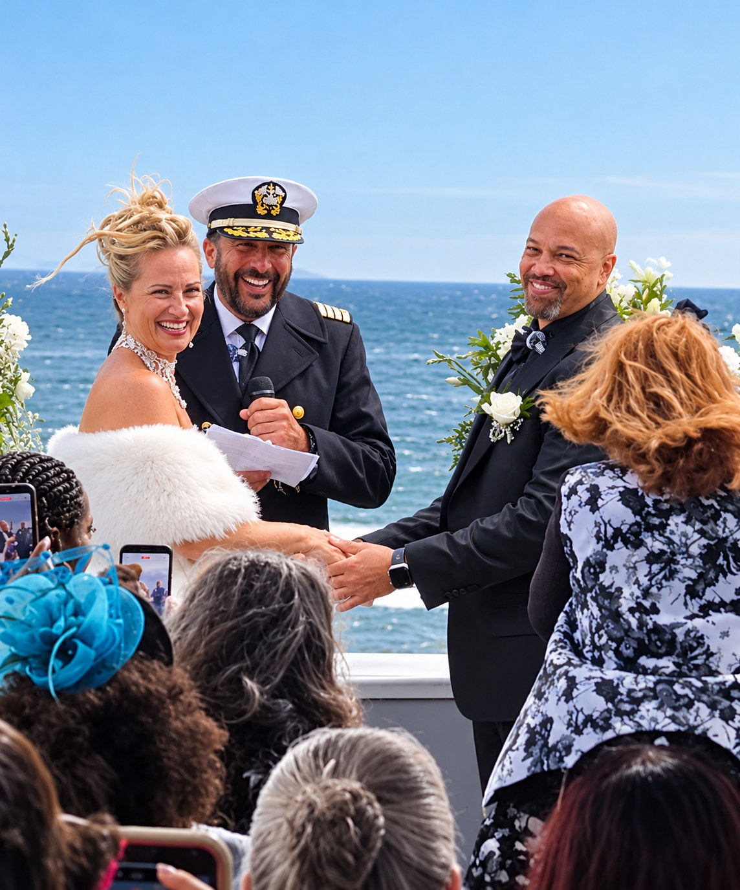
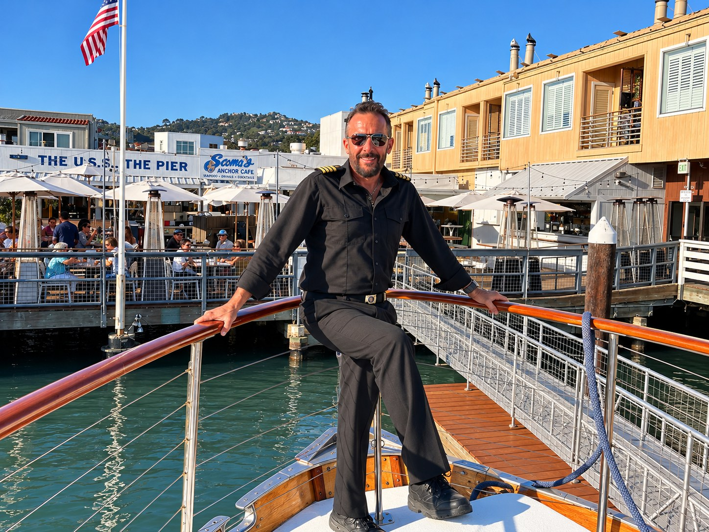

How I can help
Boat & Yacht Management
Loving care for your boat.
Peace of mind for you.
I manage your boat completely, from monthly checks to repairs and haul-outs.
We’ll agree on a management plan tailored to your boat, including regular onboard visits and the maintenance coordination you need.
Request a Management QuotePrivate Boat Charters
I’ve run nearly every charter boat on San Francisco Bay, and I know which crews, food and boats fit your group and occasion. I’ll find you the best match.
Free to you, at the same price as booking directly. Charter companies pay me a referral fee when you book.
Plan My CharterExplore Private ChartersOwner Training
Patient, hands-on instruction aboard your own powerboat, using your equipment at your dock or marina. Build confidence with docking, close-quarters handling, navigation and the conditions you’ll encounter on the Bay.
If your insurer requires time with a licensed captain, we can tailor the instruction and document the training you complete. Your insurer decides whether it meets its requirements.
Discuss Training Aboard My BoatMore ways I can help
Captain ServicesDelivery & RelocationPre-Purchase ConsultingWedding Ceremonies
Hi, I'm Captain Arlan.
I've spent 30 years on San Francisco Bay, and I still love being out here. Whether I'm at the helm, looking after your boat while you're away, or teaching you to run it yourself, my job is simple: you relax, and I take care of the details.
More about meYou're in capable hands
30 years on the Bay
I know these waters, the tides and the weather. That includes more than seven years in command.
USCG 200-Ton Master
Licensed by the U.S. Coast Guard as a Master of vessels up to 200 gross tons in near coastal waters.
Operations background
As a Director of Operations and lead captain, I manage inspections, maintenance, scheduling and compliance.
What clients say

Your special day, with a captain’s personal touch
Aboard your own boat or at a favorite spot on land, in full captain’s uniform. Starting at $650.
Ask About a Wedding Ceremony


Let's get you out on the water.
Tell me a little about your boat and what you have in mind. A free 15-minute conversation, no pressure.